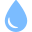

 <div class="p-1 lg:ml-64">
      <div class=" flex justify-end px-5 navbar h-12 m-0 w-90 bg-white">
        <div class="flex justify-end px-5 items-center w-full max-w-xs p-4 space-x-4 text-gray-500 divide-x divide-gray-200 -right-40" role="alert">
          <span class="material-symbols-outlined text-end">
            notifications
          </span>
          
        </div>
      </div>
      <div class="m-16 flex flexremove lg:flex-row sm:flex-col ">
        <div class="posi" style="margin-left: 10px">
          <h1 class="mx-12" style="font-size: 25px">Analyses Positif</h1>

          <div class="text-center h-96 w-72  p-5"
              style="
              background-color: #4a96a6;
              border-radius: 5%;">
            
            <h1 class="text-2xl mt-10  " style="color: white;">Positif</h1>
            <div id="container1">
              <svg
                class="circle-container1"
                viewBox="2 -2 28 36"
                xmlns="http://www.w3.org/2000/svg">
                <linearGradient id="gradient1">
                  <stop class="stop1" offset="0%" />
                  <stop class="stop2" offset="100%" />
                </linearGradient>
                <circle
                  class="circle-container__background1"
                  r="16"
                  cx="16"
                  cy="16"
                  shape-rendering="geometricPrecision">
                </circle>
                <circle
                  class="circle-container__progress1"
                  r="16"
                  cx="16"
                  cy="16"
                  style="stroke-dashoffset: 20"
                  shape-rendering="geometricPrecision"
                >
                </circle>
              </svg>
              <h1 class="color-white" style=" position: absolute; color: white;" id="neg1">
                91%
              </h1>
            </div>
          </div>
        </div>
        <div class="nega">
          <h1 class="mx-12 " style="font-size: 25px">Analyses Negatif</h1>

          <div
            class="text-center h-96 w-72 bg-white rounded-xl border "
            style="border-color: rgb(123, 179, 179)">
            
            <h1 class="text-2xl mt-10">Negatif</h1>
            <div id="container2">
              <svg
                class="circle-container"
                viewBox="2 -2 28 36"
                xmlns="http://www.w3.org/2000/svg">
                <linearGradient id="gradient">
                  <stop class="stop1-1" offset="0%" />
                  <stop class="stop2-2" offset="100%" />
                </linearGradient>
                <circle
                  class="circle-container__background"
                  r="16"
                  cx="16"
                  cy="16"
                  shape-rendering="geometricPrecision">
                </circle>
                <circle
                  class="circle-container__progress"
                  r="16"
                  cx="16"
                  cy="16"
                  style="stroke-dashoffset: 20"
                  shape-rendering="geometricPrecision">
                </circle>
              
              </svg>
              <h1 class=""  style=" position: relative;" id="neg"> 9%</h1>
              
            </div>
          </div>
        </div>
      </div>
      
    </div>
    
    <div>
        <h1 class="m-20" style="font-size: 25px">Analyses par mois</h1>
        <div class="w-2/3 h-96 mb-10 ml-24">
          <canvas id="myChart"></canvas>
        </div>
      </div>
  
  
  
      <script src="https://cdn.jsdelivr.net/npm/chart.js"></script>
      <script>
        const ctx = document.getElementById("myChart");
  
        new Chart(ctx, {
          type: "bar",
          data: {
            labels: [
              "JANVIER",
              "FEVRIER",
              "MARS",
              "AVRIL",
              "MAI",
              "JUIN",
              "JUILLET",
              "AOUT",
              "SEPTEMBRE",
              "OCTOBRE",
              "NOVEMBRE",
              "DECEMBRE",
            ],
            datasets: [
              {
                label: "# of Votes",
                data: [16, 9, 20, 6, 8, 4, 10, 15, 14, 15, 14, 15],
                borderWidth: 1,
                backgroundColor: "white",
                hoverBackgroundColor: "#4A96A6",
              },
            ],
          },
          options: {
            plugins: {
              legend: {
                display: false,
              },
            },
            maintainAspectRatio: false,
            scales: {
              y: {
                beginAtZero: true,
                display: false,
                
              },
              x: {
                grid: {
                  color: "white",
                },
              },
            },
          },
        });
      </script>